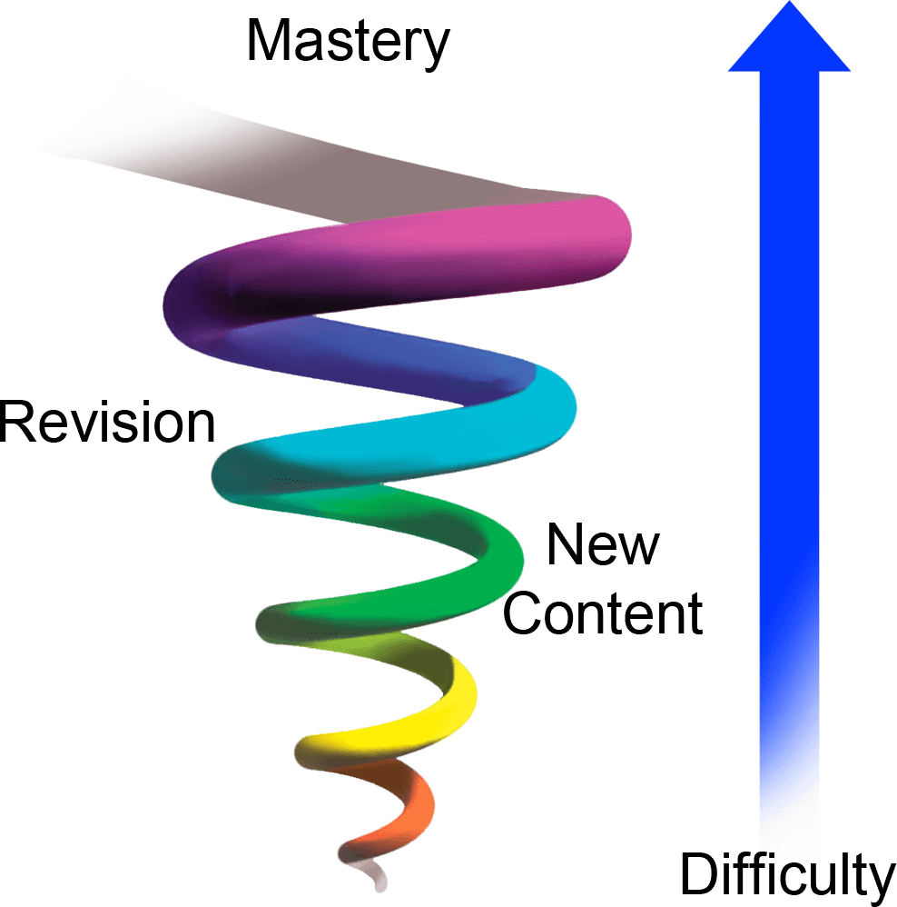

🧠
The science of how we learn, fail, and grow
Based on the work of Carol Dweck
Submit your answer anonymously:
"What's something you find difficult that gets in your way day to day?"
📱 Submit your answer on Google Forms
In person: write it on a piece of paper, scrunch it up
We'll come back to these at the end.
The view you adopt for yourself profoundly affects the way you lead your life.
Her core finding: what people believe about their abilities shapes whether they actually develop them.
Full stop. The story ends. Identity is fixed. The brain disengages.
A path opens. The story continues. The brain stays curious.
Dweck's studies with children showed that simply reframing with "yet" changed persistence, performance, and even brain activity.
Every experience gets a narrative. You're the author.
Fixed narrative
"I failed the test → I'm stupid → Why bother trying"
"They got promoted, not me → I'm not good enough"
Growth narrative
"I failed the test → What did I miss? → Next time I'll study differently"
"They got promoted → What can I learn from their approach?"
Same event. Different story. Different outcome.

One long session, everything at once. Feels productive, fades fast.
Shorter sessions, spread over time. Each return strengthens the spiral.
The gaps between sessions are not wasted time: where consolidation happens.
Growth happens at the edge of your ability.
Too easy → boredom. Too hard → shutdown.
The stretch zone is where mindset matters most.
→ Kids chose easier tasks, lied about scores, collapsed at difficulty
→ Kids chose harder tasks, persisted, improved
One sentence of praise shifted children's mindset and behaviour.
We don't apply praise equally. There's a gendered pattern:
Success → "He's a natural"
Failure → "He didn't try hard enough"
Ability is assumed. Effort explains the gap.
Success → "She worked so hard"
Failure → "She's just not got it"
Effort is assumed. Ability is in question.
By age 6, girls already associate "brilliance" with boys, not themselves.
They begin to avoid activities described as being for children who are "really, really smart."
Fields that prize "innate genius" have the largest gender gaps.
STEM, philosophy, ...: where culture signals they don't belong.
Where does your validation come from?
External validation
"Do they think I'm good enough?"
"Did I get the grade/promotion/like?"
Fragile. You can't control it. It trains you to perform, not to learn.
Internal validation
"Did I improve?"
"Did I give honest effort?"
"What did I learn?"
Durable. You own it. It trains you to grow.
Growth mindset = shifting the scoreboard inside.
When you hear yourself say "I'm bad at X", try one of these:
"I haven't got the hang of this yet"
"I tend to rush the opening — I can practise that part"
"I haven't found the right approach for me yet"
"I've been here before and understood more each time"
"What's one tiny thing I could try this week?"
"Am I better at this than six months ago?"
"Something you find difficult that gets in your way day to day"
Pick a tool from the previous slide.
Rewrite your answer.
Take 30 seconds, then we'll hear a few — if you're willing.
Becoming is better than being.
Carol Dweck (and others), Mindset
Dweck, C. S. (2006). Mindset: The New Psychology of Success. Random House.
Mueller, C. M. & Dweck, C. S. (1998). Praise for intelligence can undermine children's motivation and performance. Journal of Personality and Social Psychology, 75(1), 33–52.
Dweck, C. S. (2015). Carol Dweck revisits the "growth mindset." Education Week, 35(5), 20–24.
Ebbinghaus, H. (1885). Über das Gedächtnis (Memory: A Contribution to Experimental Psychology). — spacing effect
Bruner, J. S. (1960). The Process of Education. Harvard University Press. — spiral curriculum
Vygotsky, L. S. (1978). Mind in Society: The Development of Higher Psychological Processes. Harvard University Press. — zone of proximal development
Csikszentmihalyi, M. (1990). Flow: The Psychology of Optimal Experience. Harper & Row. — flow & right-sized challenge
Moser, J. S. et al. (2011). Mind your errors: Evidence for a neural mechanism linking growth mindset to adaptive post-error adjustments. Psychological Science, 22(12), 1484–1489.
Leslie, S.-J., Cimpian, A., Meyer, M. & Freeland, E. (2015). Expectations of brilliance underlie gender distributions across academic disciplines. Science, 347(6219), 262–265. — genius myth & gender gaps
Bian, L., Leslie, S.-J. & Cimpian, A. (2017). Gender stereotypes about intellectual ability emerge early and influence children's interests. Science, 355(6323), 389–391. — brilliance bias from age 6
Dweck, C. S. TED Talk. (2014). The power of believing that you can improve.